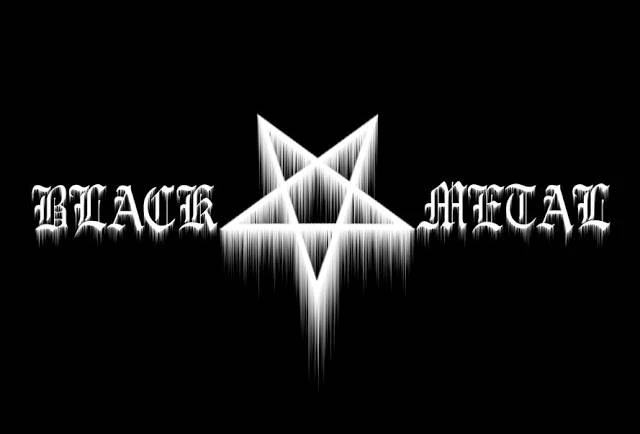
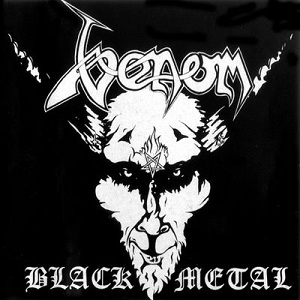
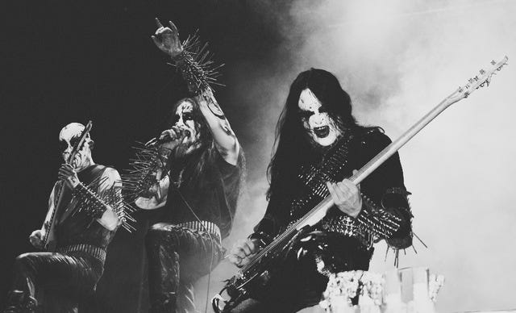

Black metal se trata de um subgénero de metal extremo onde tem como principal foco uma
éstetica insanamente rebelde, focada em temas como o oculto, natureza, emoções negativas, paganismo e individualismo.
Sendo um dos subgéneros de metal extremo mais populares e marcantes do cena de metal.
A primeira vez que o termo "black metal" foi utilizado foi na música e album, do mesmo
nome da banda Venom em 1982. Contanto, esta música não apresenta elementos do black metal normal
dos dias de hoje, sendo classificada com speed metal ou proto-black metal, se enquadrando em um subgénero de black metal
que antecede o black metal, bandas como Venom, Bathory, Celtic Frost e HellHammer são todas banda a qual tiveram grande influencia na
formação do subgénero extremo, com todos estas bandas apresentando instrumentos com distorção e temas
sobre o ocultismo, não de crença teologica mas como um testamento a rebelião a o conservatismo da época.
Nos anos 90 foi quando o black metal verdadeiramente começou a se desenvolver, com a principal
banda responsavel pela criação do sub-género sendo a infame banda nórueguesa Mayhem, a qual
teve um historico de arsonismo em igrejas nórueguesas, como um testamento a sua rebelião e filosofia que eles iriam fazer os
mesmo danos que os mónarcas cristãos fizeram a templos de paganismo nórdico. Causando uma onda de crimes no pais.


| Album | Nota | Ano |
| Filosofem | 3.87/5 (32k ratings) | 1996 |
| Ulver | 3.90/5 (19k ratings) | 1995 |
| A Blaze In The Northern Sky | 3.94/5 (19k ratings) | 1991 |
| De Miisterys Dom Sathanas | 3.77/5 (17k ratings) | 1994 |
| Storm of the Light's Bane | 3.98/5 (16k ratings) | 1995 |